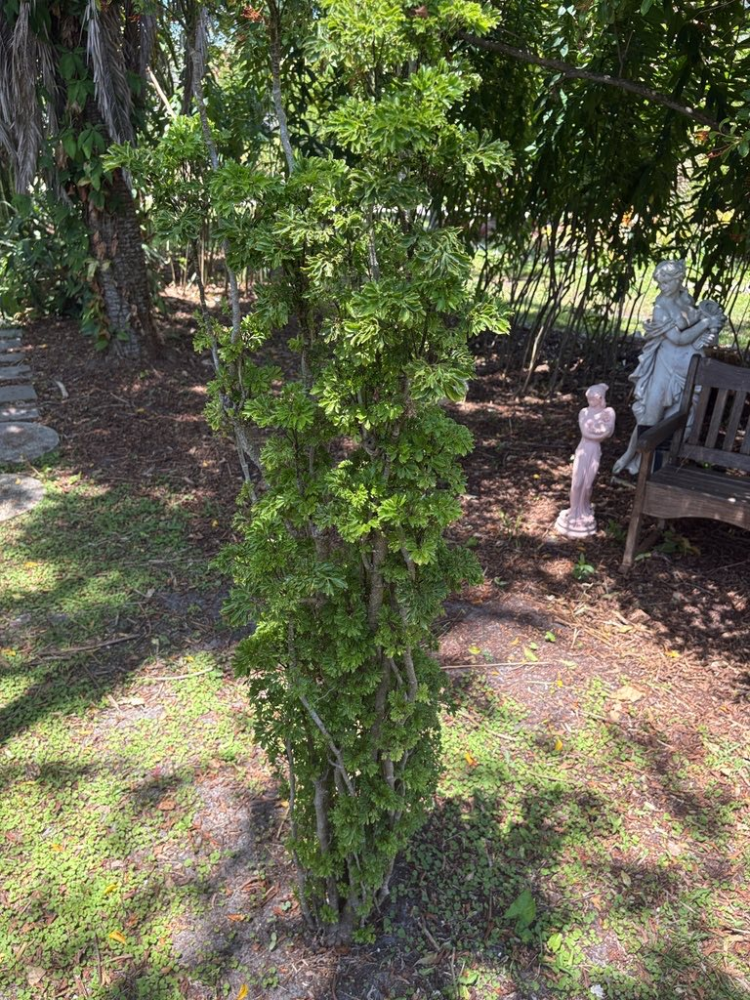

- When stressed — by drought, a hard pruning, or a sudden move — Ming Aralia releases a pungent scent from leaf glands, something between spice and over-brewed coffee. It's the plant's way of announcing its displeasure.
- In Vietnam, where it's called Dinh Lang, the roots are so prized as a tonic and adaptogen that the plant is nicknamed 'Ginseng of the Poor' — a nod to its chemistry, which includes many of the same saponin compounds found in true ginseng.
- The genus name Polyscias is Greek for 'many shades' — a reference to the dense, layered canopy the finely divided leaves create.
- Ming Aralia's gnarled, twisted branches make it a natural candidate for bonsai culture, and dedicated growers treat it exactly that way — training and pruning it over years into sculptural miniature forms.
Ming Aralia is native to the wet tropical zone of Central Malesia — the Sulawesi and Maluku Islands of Indonesia — along with New Guinea and northern Australia.
From there it spread, likely very early, across the Indian Ocean trade network into South and Southeast Asia, where it has been cultivated for food and medicine for so long that pinning down its exact introduction history is nearly impossible.
It arrived in Florida and the broader Americas as an ornamental, valued for its finely cut evergreen foliage and its tolerance of low light indoors. Outdoors in South Florida it grows as a landscape shrub or informal hedge; in Bradenton it reaches its climatic limit, needing protection from hard freezes.
- The leaves of Ming Aralia are finely divided two to three times — tripinnate in botanical terms — giving each frond a lacy, almost ferny texture that is unusual among tropical shrubs. The leaflets are narrow, glossy, and irregularly toothed, and the whole leaf can measure up to roughly a foot across. Cultivated forms vary considerably, from deep green and compact to open and slightly drooping.
- This is a plant with two quite different identities depending on where you are in the world. In temperate countries it's primarily a houseplant — prized, sometimes finicky, occasionally spectacular.
- Across Vietnam and Southeast Asia it's a workaday herb: fresh leaves tucked into fish salads and spring rolls, roots dried and steeped in rice wine as a body tonic, and an extensive traditional pharmacopoeia built around its anti-inflammatory and adaptogenic properties.
- Flowering outside of tropical conditions is rare, but when it does bloom, the inflorescences are terminal panicles up to roughly a foot long, carrying many small umbels of pale greenish-white flowers. The resulting drupes — tiny, fleshy fruits — are seldom seen in cultivation in Florida.
When Ming Aralia flowers outdoors in warm tropical climates, the small blossoms attract bees and flies, which are its primary pollinators. In Florida's outdoor landscape the plant rarely reaches the flowering stage reliably, so its value to local pollinators is modest at best.
It is not a documented larval host for any Florida butterflies or moths, and its fruits are too rarely produced in cultivation here to offer significant food value to birds. Its main role in the garden is structural — dense foliage that provides cover and microhabitat in mixed plantings.
Propagated almost exclusively from stem cuttings in cultivation. Some varieties also produce root suckers that can be separated once established. Air layering is another reliable method. Seed propagation is rarely used and not practical outside of tropical field conditions.
Small, pale greenish-white flowers borne in branched panicles up to roughly 12 inches long, composed of many small umbellate clusters. Flowers are actinomorphic with five petals and five stamens. In tropical climates, flowering can occur year-round; in cultivation in Florida it is uncommon.
Small fleshy drupes, about ⅛ to ¼ inch in diameter, ripening from green to purplish. Rarely produced outside of humid tropical conditions.
Alternate, bipinnate to tripinnate, on petioles about 2¾ to 6 inches long. Each leaf can reach roughly 11 inches long, composed of narrow, lanceolate to elliptical leaflets with irregularly toothed margins. Deep green and glossy; a lacy, fern-like appearance overall.
Woody and upright, developing a gnarled, slightly twisted character with age. The branching pattern and slow growth make it well-suited to bonsai training. Stems carry glands that release a pungent scent when the plant is cut or stressed.
The finely divided, tripinnate leaves are the most distinctive feature — look for the layered, lacy canopy of narrow, toothed leaflets. Older specimens develop a pleasingly gnarled, woody trunk that can resemble a bonsai at scale. If the plant has been recently pruned or is under stress, lean in close — you may catch the spicy, resinous scent from the stem glands.
The leaf sap is a known skin irritant — wash hands after handling, especially before touching your eyes. Ingesting the leaves or plant material can cause mouth irritation, nausea, and gastrointestinal upset in people. The same applies to dogs and cats: saponins in the plant can cause vomiting, drooling, and GI distress, though serious poisoning is rare.
Somewhat paradoxically, the young leaves are a traditional food in Vietnam and Southeast Asia — eaten fresh in salads and cooked in soups — so the risk to people is real but context-dependent and not at a level considered seriously toxic.
The common name 'Ming Aralia' is a marketing name that took hold in the mid-20th century U.S. nursery trade — likely evoking the Ming dynasty's association with refined aesthetics — rather than any historical or geographic connection to China.
There are several cultivated varieties in circulation, including 'Snowflake' (a variegated form with white-edged leaflets) and 'Plumata' (an especially feathery, fine-textured selection sometimes grown as a bonsai subject).


- © Randall Carter (CC-BY-NC), via iNaturalist